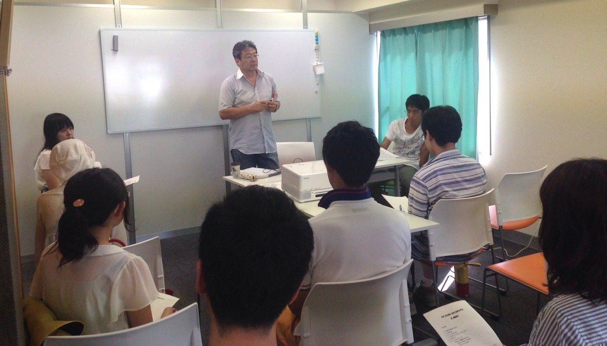

JCSN日中大学生×社会人交流プログラム
キックオフミーティング
8/2にJCSN日中大学生×社会人交流プログラムキックオフミーティングが開かれました。
本プログラムは、日中の架け橋となり活躍のできる人材の育成を目的に作られました。このプログラムではケーススタディーや各界で活躍する方との交流を通して、中国への理解を深めることを目的としております。
また、期間は月に１回程度のミーティングを１年ほど予定しており、前半に事務局長によるゲーススタディーを行い、後半に中国についての勉強会等を予定しております。
今回は第一回のキックオフミーティングでは、団体紹介やプログラムの目的・内容等を説明した後に、次回から本格的に行うケーススタディーの導入を行いました。その後に経済・教育などの分野に分かれてディスカッション形式で勉強会を行い、最後には中国に留学していたJCSN会員と現地生活などの話をたくさん聞き、中国の現在について討論しました。
今回のプログラムでは1,2年生が中心であり、まだ中国についての知識が運営を行っている我々と差があることを感じました。
彼らのこれからの成長が楽しみです。
次回のプログラムでは本格的にケーススタディーを行う予定です。
＜JCSN日中大学生×社会人交流プログラム キックオフミーティング＞
・タイムテーブル

ケーススタディについての説明

中国に留学していた方との討論会